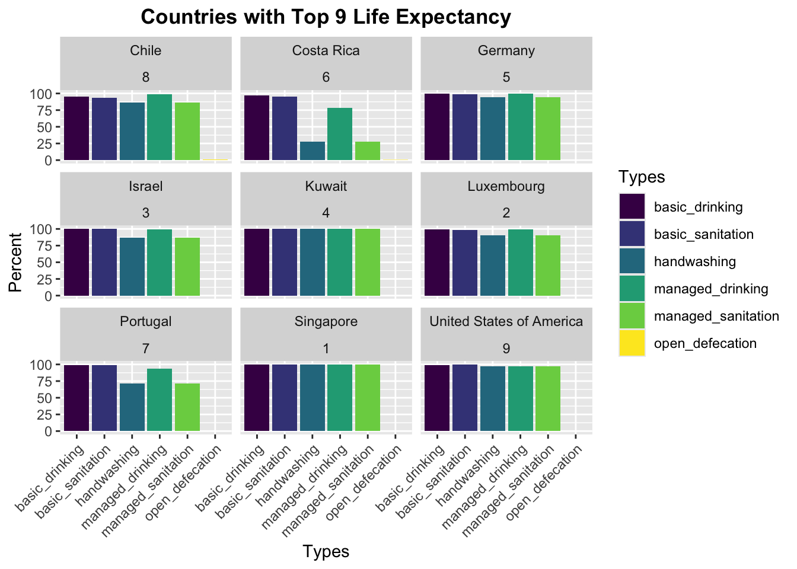
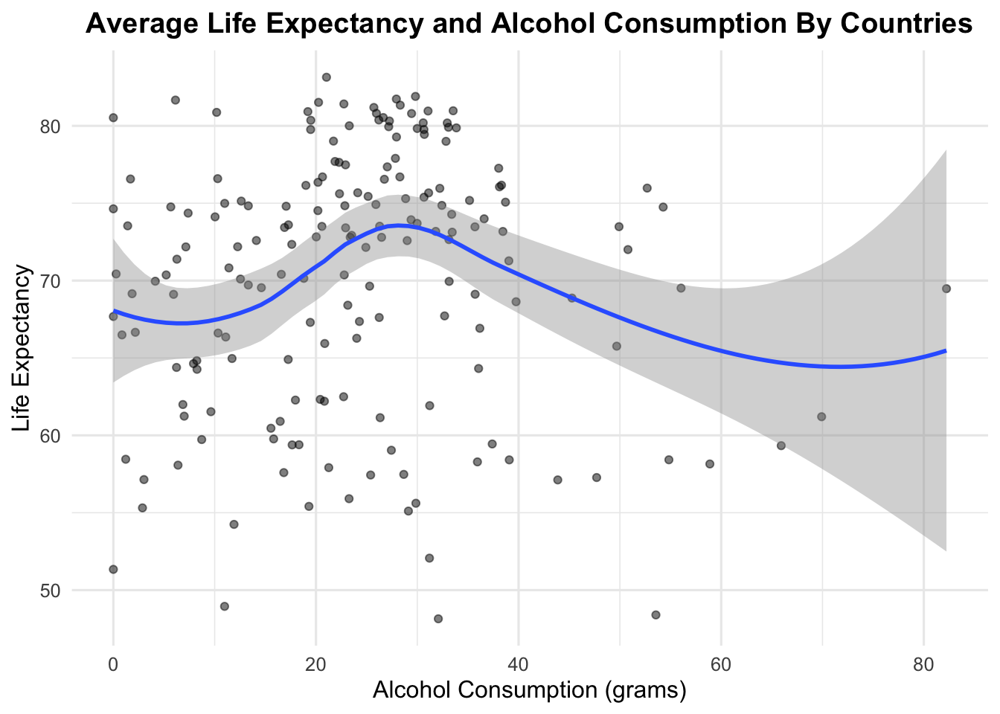

Registered S3 method overwritten by 'GGally':
method from
+.gg ggplot2
Code
data <-read_excel("/Users/maliwang/Desktop/Course/stat5702/rep_gho/data.xlsx")head(data)
# A tibble: 6 × 24
setting date source indicator_abbr indicator_name dimension subgroup estimate
<chr> <dbl> <chr> <chr> <chr> <chr> <chr> <dbl>
1 Afghan… 1962 WHO G… MDG_0000000001 Infant mortal… Sex Female 220.
2 Afghan… 1962 WHO G… MDG_0000000001 Infant mortal… Sex Male 242.
3 Afghan… 1962 WHO G… MDG_0000000007 Under-five mo… Sex Female 336.
4 Afghan… 1962 WHO G… MDG_0000000007 Under-five mo… Sex Male 352.
5 Afghan… 1963 WHO G… MDG_0000000001 Infant mortal… Sex Female 216.
6 Afghan… 1963 WHO G… MDG_0000000001 Infant mortal… Sex Male 238.
# ℹ 16 more variables: se <lgl>, ci_lb <dbl>, ci_ub <dbl>, population <lgl>,
# flag <lgl>, setting_average <dbl>, iso3 <chr>, favourable_indicator <dbl>,
# indicator_scale <dbl>, ordered_dimension <dbl>, subgroup_order <dbl>,
# reference_subgroup <dbl>, whoreg6 <chr>, wbincome2024 <chr>, update <chr>,
# dataset_id <chr>
3.1 environmental factors
3.2 personal behaviors
3.3 Life Expectancy Trends by World Bank Income Groups
Code
# Filter and prepare the datasetlife_expectancy_data <- data |>filter(indicator_name =="Life expectancy at birth (years)") |>mutate(wbincome2024 =factor( wbincome2024, levels =c("High income", "Upper middle income", "Lower middle income", "Low income") ))#write.csv(life_expectancy_data, "life_expectancy_data.csv", row.names = FALSE)# Calculate average life expectancy for all countries by setting and income groupcountry_avg_life_expectancy <- life_expectancy_data %>%group_by(setting, wbincome2024) %>%summarize(average_life_expectancy =mean(estimate, na.rm =TRUE), .groups ="drop")
Code
# Plot the boxplotggplot( country_avg_life_expectancy[!is.na(country_avg_life_expectancy$wbincome2024), ], aes(x = wbincome2024, y = average_life_expectancy, fill = wbincome2024)) +geom_boxplot(outlier.size =1, alpha =0.8) +# Adjust outlier size and box transparencytheme_minimal(base_size =12) +# Slightly larger base font sizescale_fill_viridis_d() +# Choose a specific viridis color optionlabs(title ="Life Expectancy Across Income Levels (2024)",subtitle ="A comparative analysis of life expectancy by World Bank income groups",x ="World Bank Income Group",y ="Life Expectancy (Years)" ) +theme(legend.position ="none", plot.title =element_text(face ="bold", hjust =0.5), # Center-align titleplot.subtitle =element_text(hjust =0.5) # Center-align subtitle )
The boxplot provides a detailed comparison of life expectancy at birth in 2024 across four World Bank income groups: High income, Upper middle income, Lower middle income, and Low income. The High income group demonstrates the highest median life expectancy, slightly above 80 years, with a relatively narrow interquartile range (IQR), indicating low variability among countries in this category. A few outliers below 70 years suggest that some high-income countries experience lower-than-expected life expectancy. The Upper middle income group shows a median life expectancy of approximately 75 years, with a moderately wider IQR compared to the High income group, highlighting greater variability. The Lower middle income group exhibits a further decline in median life expectancy to around 70 years, accompanied by a wider IQR, suggesting even greater disparities within this category. The Low income group has the lowest median life expectancy, just above 60 years, with a wide range of variability and several outliers extending toward higher values, reflecting countries that outperform the average for this income group. This visualization underscores the strong positive correlation between national income levels and life expectancy while also highlighting the disparities and exceptions within each income category.
Code
# Identify Top 20 and Bottom 20 countries by average life expectancytop_bottom_countries <- country_avg_life_expectancy %>%arrange(desc(average_life_expectancy)) %>%mutate(rank =row_number()) %>%mutate(category =case_when( rank <=20~"Top 20", rank >n() -20~"Bottom 20",TRUE~NA_character_ )) %>%filter(!is.na(category)) %>%# Keep only Top 20 and Bottom 20 countriesmutate(category =factor(category, levels =c("Top 20", "Bottom 20")))# Plot the faceted bar chartggplot(top_bottom_countries, aes(x =reorder(setting, -average_life_expectancy), y = average_life_expectancy, fill = wbincome2024)) +geom_bar(stat ="identity") +theme_minimal(base_size =12) +scale_fill_viridis_d()+facet_wrap(~ category, scales ="free_x") +# Ensure separate x-scales but fixed y-axislabs(title ="Average Life Expectancy: Top 20 and Bottom 20 Countries",x ="Country",y ="Average Life Expectancy (Years)",fill ="Income Group" ) +theme(axis.text.x =element_text(size =8, angle =45, hjust =1),strip.text =element_text(face ="bold"),panel.spacing =unit(1, "lines") # Increase spacing between facets for clarity )

In the Top 20 countries, all are classified as High income, demonstrating a direct correlation between economic prosperity and health outcomes. High life expectancy in these countries, consistently above 80 years, reflects advanced healthcare systems, widespread access to preventive care, high educational attainment, and robust public health infrastructure. These nations also benefit from lower rates of preventable diseases, effective management of chronic conditions, and social safety nets that support healthy aging. However, the clustering of high-income countries in this category raises questions about how lower-income nations can bridge this gap, particularly given the evident association between wealth and life expectancy.
The Bottom 20 countries, on the other hand, expose stark disparities. This group includes nations from Low income and Lower middle income categories, with a single representation from the Upper middle income group. Average life expectancy in this group, ranging from 50 to 60 years, is significantly lower than in the Top 20, reflecting the profound influence of socioeconomic factors on health. Challenges such as limited access to healthcare, high rates of infectious diseases, poor sanitation, malnutrition, and insufficient public health investment are likely contributors to these lower outcomes. For example, countries like Lesotho face a unique combination of socioeconomic and health crises, including high rates of HIV/AIDS, which dramatically reduce life expectancy.
The solitary representation of an Upper middle income country in the Bottom 20 warrants special attention. It suggests that income classification alone does not fully explain disparities in life expectancy. Factors such as political instability, corruption, uneven distribution of wealth, or regional health crises could account for this anomaly, indicating the need to go beyond income classifications to fully understand disparities in global health outcomes.
3.4 The Role of Healthcare Personnel in Improving Global Life Expectancy
Code
# Read datasets with appropriate skipping of rows for headersmedical_doctors <-read_excel("/Users/maliwang/Desktop/Course/stat5702/rep_gho/medical_doctors_per10000.xlsx", skip =2)nursing_midwifery <-read_excel("/Users/maliwang/Desktop/Course/stat5702/rep_gho/nursing_midwifery_per10000.xlsx", skip =2)# Calculate average medical doctors per 10,000 population by countrycountry_avg_medical_doctors <- medical_doctors %>%group_by(Location) %>%summarize(average_medical_doctors =mean(as.numeric(Value), na.rm =TRUE), # Ensure numeric conversion.groups ="drop" )# Calculate average nursing and midwifery personnel per 10,000 population by countrycountry_avg_nursing_midwifery <- nursing_midwifery %>%group_by(Location) %>%summarize(average_nursing_midwifery =mean(as.numeric(Value), na.rm =TRUE), # Ensure numeric conversion.groups ="drop" )# Merge datasets by Location (Country) and Life Expectancy Datamerged_data <-merge(country_avg_medical_doctors, country_avg_nursing_midwifery, by ="Location")merged_data <-merge(country_avg_life_expectancy, merged_data, by.x ="setting", by.y ="Location")# Create scatterplot for Life Expectancy vs. Doctors per 10,000p1 <-ggplot(merged_data, aes(x = average_medical_doctors, y = average_life_expectancy)) +geom_point(alpha =0.7, color ="darkred") +geom_smooth(method ="loess", color ="blue", se =TRUE) +theme_minimal(base_size =14) +labs(title ="Life Expectancy vs. Doctors",x ="Number of Doctors per 10,000 Population",y ="Life Expectancy (Years)" )+theme(plot.title =element_text(size =10, face ="bold"), # Increase title sizeaxis.title.x =element_text(size =9), # Increase x-axis title sizeaxis.title.y =element_text(size =9), # Increase y-axis title sizeaxis.text.x =element_text(size =9), # Increase x-axis label sizeaxis.text.y =element_text(size =9) # Increase y-axis label size )# Create scatterplot for Life Expectancy vs. Nursing and Midwifery per 10,000p2 <-ggplot(merged_data, aes(x = average_nursing_midwifery, y = average_life_expectancy)) +geom_point(alpha =0.7, color ="darkgreen") +geom_smooth(method ="loess", color ="blue", se =TRUE) +theme_minimal(base_size =12) +labs(title ="Life Expectancy vs. Nursing and Midwifery",x ="Number of Nursing/Midwifery Personnel per 10,000 Population",y ="Life Expectancy (Years)" )+theme(plot.title =element_text(size =10, face ="bold"), # Increase title sizeaxis.title.x =element_text(size =9), # Increase x-axis title sizeaxis.title.y =element_text(size =9), # Increase y-axis title sizeaxis.text.x =element_text(size =9), # Increase x-axis label sizeaxis.text.y =element_text(size =9) # Increase y-axis label size )# Combine the two plots into one grid for comparisonplot_grid(p1, p2)
`geom_smooth()` using formula = 'y ~ x'
`geom_smooth()` using formula = 'y ~ x'
The scatterplots illustrate the relationship between life expectancy and the availability of healthcare personnel, specifically doctors and nursing/midwifery personnel, per 10,000 population. In the first plot, a strong positive correlation is observed between the number of doctors and life expectancy at lower doctor-to-population ratios. For countries with fewer than 10 doctors per 10,000 people, life expectancy increases sharply as the availability of doctors rises, reflecting the critical role of medical practitioners in addressing basic healthcare needs and reducing preventable deaths. However, the relationship begins to plateau beyond approximately 20 doctors per 10,000, suggesting diminishing returns in higher-resource settings where additional doctors have a minimal incremental effect on already high life expectancy. The second plot reveals a similar pattern for nursing and midwifery personnel. Countries with low numbers of nursing and midwifery staff exhibit substantial increases in life expectancy as their numbers grow, emphasizing the importance of these personnel in maternal and general healthcare delivery. As with doctors, the relationship flattens at higher ratios, likely due to the saturation of healthcare systems where basic medical needs are already met. These findings underscore the critical role of healthcare personnel in improving life expectancy in underserved regions while highlighting the limits of their impact in more developed settings
3.5 Distance to get assistive products
Code
travel_distance_data <- data %>%filter(indicator_name %in%c("Travel distance to obtain assistive products (%) - <6 km", "Travel distance to obtain assistive products (%) - 6-25 km","Travel distance to obtain assistive products (%) - 51-100 km","Travel distance to obtain assistive products (%) - 26-50 km","Travel distance to obtain assistive products (%) - 100+ km")) %>%filter(subgroup =="Rural")travel_distance_data$indicator_name <-factor( travel_distance_data$indicator_name,levels =c("Travel distance to obtain assistive products (%) - 100+ km","Travel distance to obtain assistive products (%) - 51-100 km","Travel distance to obtain assistive products (%) - 26-50 km","Travel distance to obtain assistive products (%) - 6-25 km","Travel distance to obtain assistive products (%) - <6 km" ))distance_midpoints <-c("Travel distance to obtain assistive products (%) - <6 km"=3, "Travel distance to obtain assistive products (%) - 6-25 km"=15.5, "Travel distance to obtain assistive products (%) - 26-50 km"=38, "Travel distance to obtain assistive products (%) - 51-100 km"=75.5, "Travel distance to obtain assistive products (%) - 100+ km"=150)travel_distance_data <- travel_distance_data %>%group_by(setting) %>%summarize(sum_prop =sum(setting_average, na.rm =TRUE)) %>%left_join(travel_distance_data, by ="setting") %>%mutate(setting_average = setting_average*100/sum_prop) travel_distance_data <- travel_distance_data %>%mutate(midpoint = distance_midpoints[as.character(indicator_name)]) %>%group_by(setting) %>%summarize(weighted_distance =sum(setting_average * midpoint, na.rm =TRUE) /sum(setting_average, na.rm =TRUE)) %>%left_join(travel_distance_data, by ="setting") %>%left_join(country_avg_life_expectancy, by ="setting") %>%mutate(setting =reorder(setting, weighted_distance))ggplot(travel_distance_data, aes(x = setting, y = setting_average, fill = indicator_name)) +geom_bar(stat ="identity") +# Stacked bar chartgeom_line(aes(y = average_life_expectancy *max(setting_average) /max(average_life_expectancy), group =1), color ="red", size =1) +# Scaled life expectancy linetheme_minimal() +labs(title ="Travel Distance Categories and Life Expectancy by Country",x ="Country (Ordered by Weighted Travel Distance)",y ="Travel Distance (%)",fill ="Travel Distance Category" ) +theme(axis.text.x =element_text(angle =45, hjust =1))
Warning: Using `size` aesthetic for lines was deprecated in ggplot2 3.4.0.
ℹ Please use `linewidth` instead.

3.6 unexpected factors such as suicide and traffic accidents
Code
# Process suicide datasuicide_data <- data %>%filter(indicator_name %in%c("Crude suicide rates (per 100 000 population) - Female", "Crude suicide rates (per 100 000 population) - Male" )) %>%group_by(setting, indicator_name) %>%summarize(setting_average =mean(setting_average, na.rm =TRUE),.groups ="drop" ) %>%pivot_wider(names_from = indicator_name,values_from = setting_average )# Merge suicide data with life expectancy datamerged_data3 <- suicide_data %>%left_join(country_avg_life_expectancy, by ="setting")# Plot male vs female suicide rates, faceted by income groupggplot(merged_data3[!is.na(merged_data3$wbincome2024), ], aes(x =`Crude suicide rates (per 100 000 population) - Female`, y =`Crude suicide rates (per 100 000 population) - Male`)) +geom_point(alpha =0.4, color ="blue", size =2) +# Adjust transparency and size for claritygeom_abline(slope =1, intercept =0, color ="red", linetype ="dashed", size =1) +# Add y = x linetheme_minimal(base_size =12) +# Increase base font size for better readabilitylabs(title ="Comparison of Male and Female Suicide Rates by Income Group",x ="Female Suicide Rate (per 100,000)",y ="Male Suicide Rate (per 100,000)" ) +facet_wrap(~ wbincome2024) +# Allow facets to adjust scales for better visualizationtheme(strip.text =element_text(size =12, face ="bold"), # Emphasize facet titlesaxis.text =element_text(size =10), # Increase axis text sizeaxis.title =element_text(size =12) # Adjust axis title size )
Code
# Process homicide datahomicide_data <- data %>%filter(indicator_name =="Homicide rate (per 100 000 population)") %>%group_by(setting, subgroup) %>%summarize(setting_average =mean(estimate, na.rm =TRUE),.groups ="drop" ) %>%pivot_wider(names_from = subgroup,values_from = setting_average )# Merge homicide data with life expectancy datamerged_data4 <- homicide_data %>%left_join(country_avg_life_expectancy, by ="setting")# Plot male vs female homicide rates, faceted by income groupggplot(merged_data4[!is.na(merged_data4$wbincome2024), ], aes(x =`Female`, y =`Male`)) +geom_point(alpha =0.4, color ="blue", size =2) +# Adjust transparency and sizegeom_abline(slope =1, intercept =0, color ="red", linetype ="dashed", size =1) +# Add y = x linetheme_minimal(base_size =12) +# Increase base font size for better readabilitylabs(title ="Comparison of Male and Female Homicide Rates by Income Group",x ="Female Homicide Rate (per 100,000)",y ="Male Homicide Rate (per 100,000)" ) +facet_wrap(~ wbincome2024) +# Allow scales to adjust for each facettheme(strip.text =element_text(size =12, face ="bold"), # Emphasize facet titlesaxis.text =element_text(size =10), # Adjust axis text sizeaxis.title =element_text(size =12) # Adjust axis title size )
The two graphs highlight the gender disparity in suicide and homicide rates across different income groups, revealing significant patterns influenced by socioeconomic factors. In the first graph, male suicide rates consistently exceed female rates across all income levels, with the gap being particularly pronounced in high-income and upper-middle-income countries. This suggests that while higher-income countries may have better access to mental health resources, societal pressures and mental health challenges disproportionately affect men. In lower-income countries, the disparity narrows slightly, though male rates still dominate, reflecting underlying cultural, societal, and economic factors. The second graph demonstrates a similar pattern for homicide rates, with male rates significantly exceeding female rates in all income groups. This disparity is most severe in upper-middle-income countries, where male homicide rates frequently surpass 60 to 90 per 100,000, likely due to higher levels of systemic violence, instability, and limited law enforcement. However, despite these patterns, the overall mortality due to suicide and homicide is relatively small compared to other causes of death and thus contributes minimally to the observed differences in life expectancy across income groups. This suggests that while suicide and homicide reflect important societal challenges, their direct impact on life expectancy is limited relative to broader health and systemic factors.
3.7 Relationship between Obesity, Income, and Life Expectancy Across Nations
Code
# Process health indicator datasetsinsufficient_activity_data <- data %>%filter(indicator_name =="Insufficient physical activity among adults aged 18+ years (age-standardized) (%)") %>%group_by(setting) %>%summarize(setting_average =mean(setting_average, na.rm =TRUE), .groups ="drop")child_obesity_data <- data %>%filter(indicator_name =="Obesity prevalence among children and adolescents (crude estimate) (%)") %>%group_by(setting) %>%summarize(setting_average =mean(setting_average, na.rm =TRUE), .groups ="drop")BMI_data <- data %>%filter(indicator_name =="Obesity prevalence among adults, BMI>=30 (age-standardized) (%)") %>%group_by(setting) %>%summarize(setting_average =mean(setting_average, na.rm =TRUE), .groups ="drop")blood_pressure_data <- data %>%filter(indicator_name =="Raised blood pressure (SBP>=140 OR DBP>=90) (18+ years) (age-standardized) (%)") %>%group_by(setting) %>%summarize(setting_average =mean(setting_average, na.rm =TRUE), .groups ="drop")blood_glucose_data <- data %>%filter(indicator_name =="Raised fasting blood glucose (>=7.0 mmol/L) (18+ years) (age-standardized) (%)") %>%group_by(setting) %>%summarize(setting_average =mean(setting_average, na.rm =TRUE), .groups ="drop")# Combine datasets into a single tableparallel_data <- child_obesity_data %>%left_join(BMI_data, by ="setting", suffix =c("_child_obesity", "_Adult_BMI")) %>%left_join(insufficient_activity_data, by ="setting") %>%left_join(blood_pressure_data, by ="setting") %>%left_join(blood_glucose_data, by ="setting") %>%left_join(country_avg_life_expectancy, by ="setting")parallel_data <- parallel_data %>%rename(Child_Obesity = setting_average_child_obesity,Adult_BMI = setting_average_Adult_BMI,Insufficient_Physical_Inactivity = setting_average.x,Raised_Blood_Pressure = setting_average.y,Raised_Blood_Glucose = setting_average,Life_Expectancy = average_life_expectancy )# Create parallel coordinate plotggparcoord(data = parallel_data,columns =c(2:5, 8), # Use selected numeric columns for plottinggroupColumn =7, # Group by income group or regionscale ="uniminmax", # Normalize data to [0,1]title ="Parallel Coordinate Plot of Health Indicators and Life Expectancy",alphaLines =0.3# Adjust transparency for overlapping lines) +theme_minimal(base_size =12) +scale_color_viridis_d() +labs(y ="Normalized Scale",x ="Health Indicators",color ="Income Group" ) +theme(axis.text.x =element_text(angle =45, hjust =1, size =9), # Improve axis text readabilitylegend.title =element_text(size =9, face ="bold"),legend.text =element_text(size =9) )
Warning: Removed 5 rows containing missing values or values outside the scale range
(`geom_line()`).
The parallel coordinate plot illustrates the relationships between various health indicators (e.g., child obesity, adult BMI, insufficient physical activity, raised blood pressure) and life expectancy, grouped by World Bank income classifications. Each line represents a country, with values normalized to a scale between 0 and 1 for comparability across indicators. The colors distinguish countries based on their income group.
Countries in the High income group (darker lines) often show higher values for child obesity, adult BMI and insufficient physical activity, reflecting lifestyle patterns such as sedentary behavior and high-calorie diets that are more prevalent in wealthier nations. Despite this, these countries maintain relatively high life expectancy, likely due to advanced healthcare systems that manage chronic conditions effectively. In contrast, Low income countries (lighter lines) generally have higher rates of raised blood pressure and child obesity along with lower life expectancy, which may be attributed to limited access to healthcare, poor nutrition, and higher prevalence of untreated health conditions.